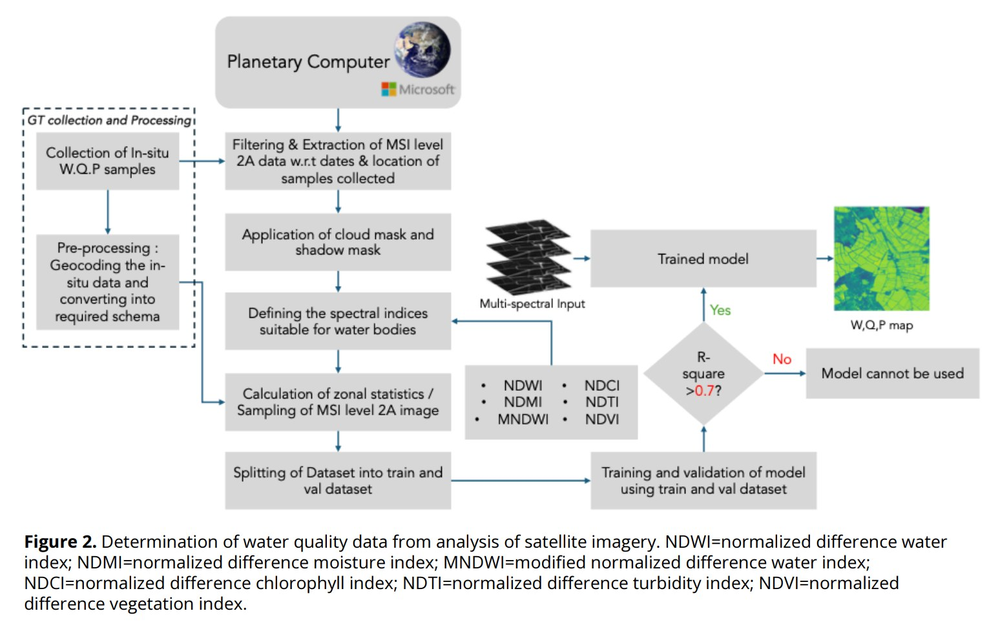
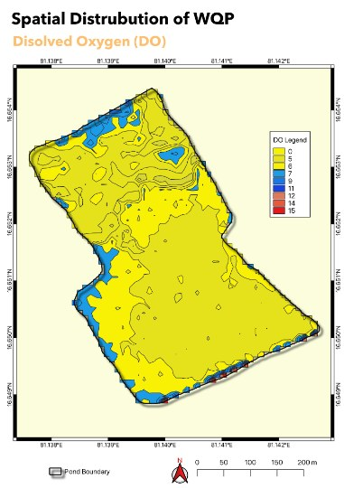
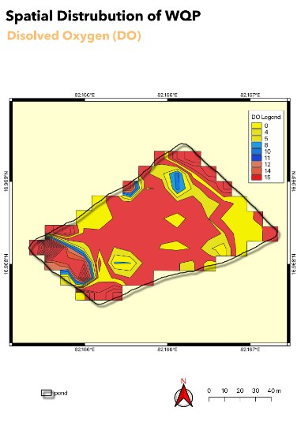

Regression · water quality
Water Quality Estimation from Sentinel-2
A machine learning pipeline that turns Sentinel-2 surface reflectance into pond-level water quality maps, replacing sparse manual sampling with continuous spatial coverage.
- Role
- Data Scientist —
remote sensing & modelling lead - Team
- Captain Fresh × FWI
FWI ran field sampling - Data
- 100 matchup samples
Sentinel-2 MSI L2A - Models
- 6 XGBoost regressors
one per parameter - Result
- 4 of 6 deployed
R² up to 0.85
The problem
Water quality is the entire operating environment in aquaculture, and it drives growth, survival and feed conversion directly. A channel catfish density study showed feed conversion ratio degrading from 1.3 to 2.5 and net profit collapsing by 87% — from $2,933 to $389 per hectare — as water quality deteriorated.
But the standard way to measure it is in-situ sampling: accurate, yet slow, labour-intensive, invasive to the stock, and limited to isolated point observations. A farm operator gets a handful of numbers from a handful of ponds on a handful of days.
Remote sensing offers the opposite trade-off — continuous coverage in space and time, with no physical contact — by measuring how dissolved and suspended constituents absorb and scatter sunlight. The open question was how far that reaches. Optically active parameters like chlorophyll-a interact with light directly, but the parameters farmers care most about, notably dissolved oxygen, are optically inactive and can only be inferred indirectly, if at all.
My role
Data scientist and modelling lead. A joint initiative between Captain Fresh and FWI: FWI ran the field sampling, Captain Fresh set the sampling protocol and built the models.
Data
| Source | What it gives |
|---|---|
| Sentinel-2 AWS & Planetary Computer |
Imagery across 12 spectral bands at roughly a five-day revisit, enabling continuous observation of the phenological and environmental changes associated with shrimp farming. |
| Ground truth In-situ field sampling |
All water quality parameters were collected physically in the field by the FWI team, with sampling dates and times specified in advance to align with satellite overpasses. |

What I built
- A matchup dataset of 100 in-situ samples paired to contemporaneous Sentinel-2 surface reflectance.
- A preprocessing pipeline over Sentinel-2 MSI Level-2A from the Microsoft Planetary Computer: cloud and shadow masking, then computation of water-relevant spectral indices (NDWI, MNDWI, NDCI, NDTI).
- Six per-parameter XGBoost regressors — dissolved oxygen, pH, ammonia, chlorophyll-a, phycocyanin and temperature — each with its own selected band and index feature set.
- An R² ≥ 0.7 acceptance gate: only models clearing it are applied to the full scene to generate wall-to-wall water quality maps.
- Deployment of the trained models, containerised with Docker.
How it works
Input: Sentinel-2 MSI L2A scenes via the Planetary Computer STAC API, plus geolocated in-situ samples. Output: per-parameter raster maps of predicted water quality across the scene.


The hardest problem: dissolved oxygen
Symptom. DO — the single most operationally important parameter, since it governs respiration for everything in the pond — was the one model that failed. R² = 0.42, well under the deployment gate, while ammonia reached 0.85 and chlorophyll-a 0.76.
Root cause. DO is optically inactive. It does not absorb or scatter light in a way a multispectral sensor can detect, so there is no direct signal to learn from — only correlations routed through parameters that are visible.
Investigation. I worked through DO's relationships with each of the other measured parameters to see whether indirect inference could carry it:
- Temperature — inverse relationship. Warmer water holds less oxygen while simultaneously raising metabolic rate and therefore oxygen demand. A dual stressor, and directionally informative.
- pH — coupled through the diurnal algal cycle. Daytime photosynthesis consumes CO₂ and releases O₂, raising both pH and DO; night-time respiration reverses both.
- Chlorophyll-a — a direct proxy for phytoplankton biomass, and therefore for the amplitude of that daily oxygen swing.
- Ammonia and phycocyanin — correlated, but as toxicity indicators rather than oxygen predictors. I ruled both out as DO features: using a toxin proxy to infer DO conflates two distinct risks.
Temperature, pH-driven diurnal dynamics and chlorophyll-a support qualitative inference of DO regimes, but are insufficient for quantitative estimation. Accurate DO requires in-situ measurement or site-specific calibrated models. I reported this as a boundary of the method rather than tuning until the metric looked acceptable.
Results
| Parameter | R² | Deployed |
|---|---|---|
| Ammonia | 0.85 | Yes |
| Chlorophyll-a | 0.76 | Yes |
| pH | 0.75 | Yes |
| Phycocyanin | 0.73 | Yes |
| Temperature | 0.68 | No |
| Dissolved oxygen | 0.42 | No |
- Four of six parameters cleared the deployment threshold from only 100 matchup samples.
- Optically active parameters showed pronounced spectral response and proved well suited to multispectral estimation; the optically inactive one did not.
- Feature-importance finding: red-edge and NIR bands were selected repeatedly across parameters, consistent with their sensitivity to phytoplankton biomass, organic matter and turbidity. SWIR bands contributed information on moisture content and dissolved material.
- Established a validated proof-of-concept for scalable spaceborne monitoring, with a path toward real-time water quality risk detection and site-level management.